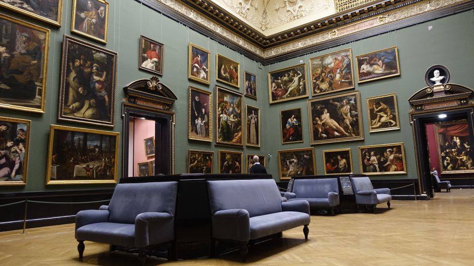

<!-- This picture element changes images based on screen size -->
<picture>
  <!-- Square image for screens 960px and larger -->
  <source
    media="(min-width: 960px)"
    srcset="images/museum-square.jpg"
  >

  <!-- Landscape image for screens smaller than 960px -->
  <source
    media="(max-width: 959px)"
    srcset="images/museum-landscape.jpg"
  >

  <!-- Fallback image -->
  
</picture>
